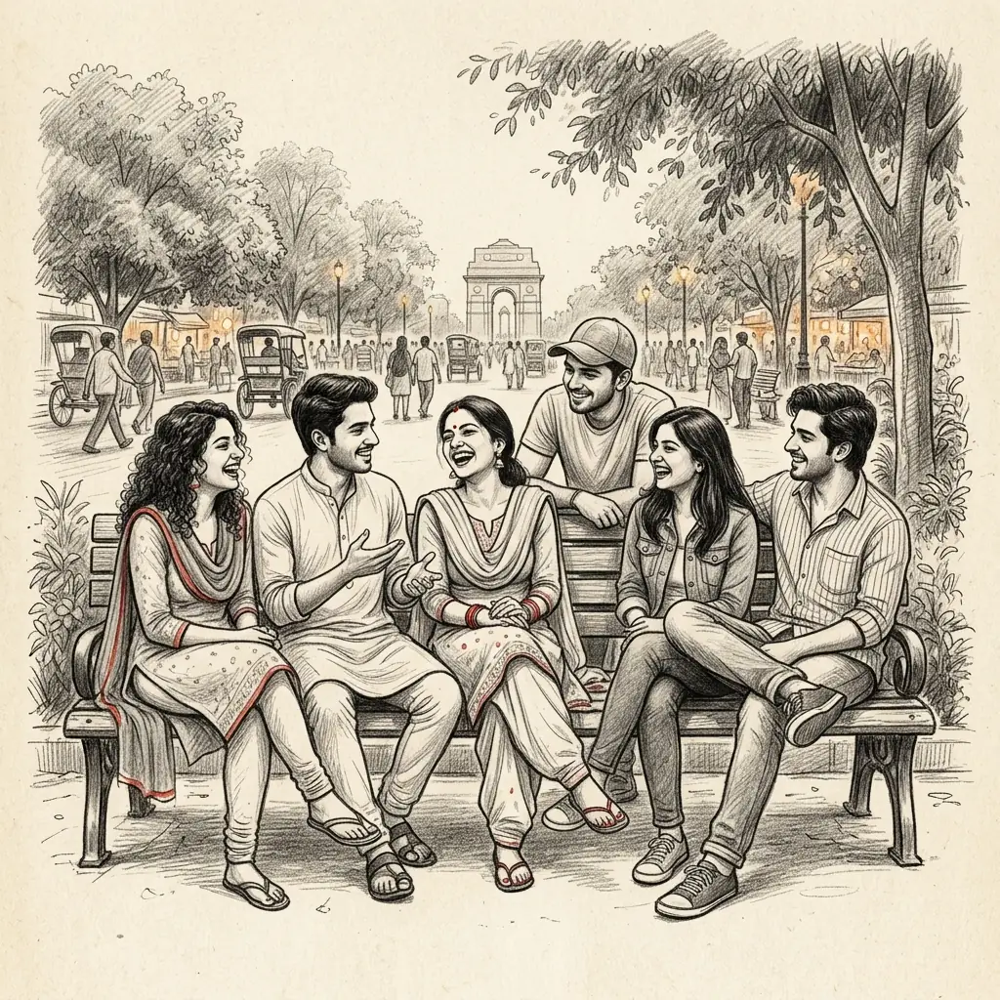
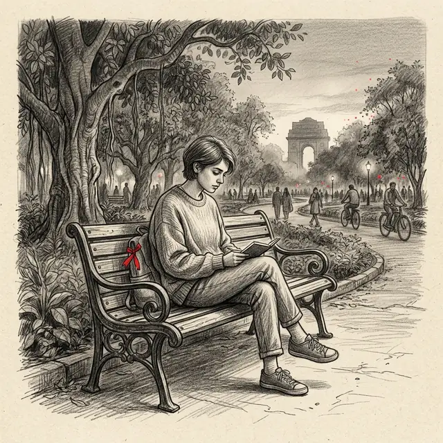
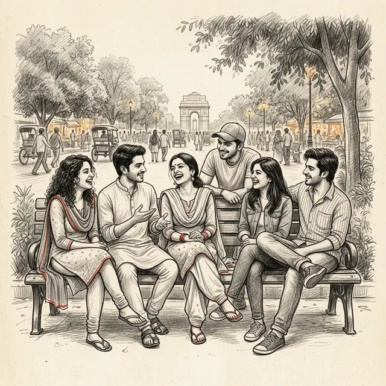
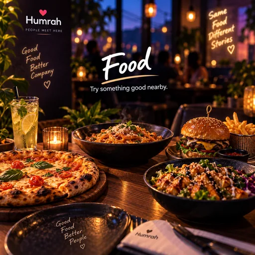
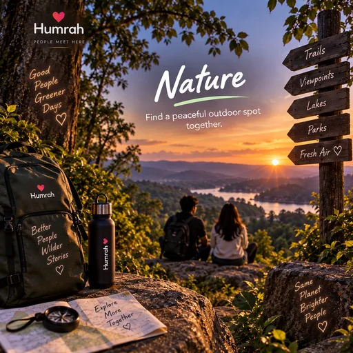
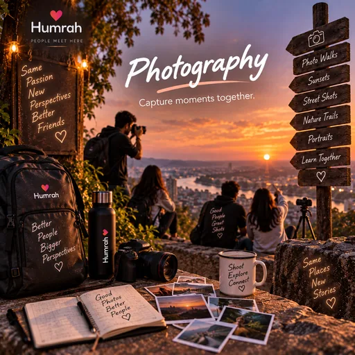
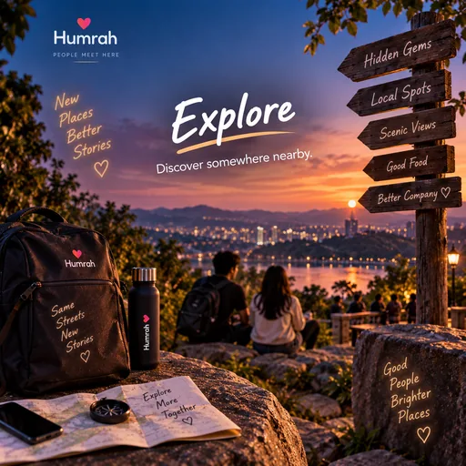
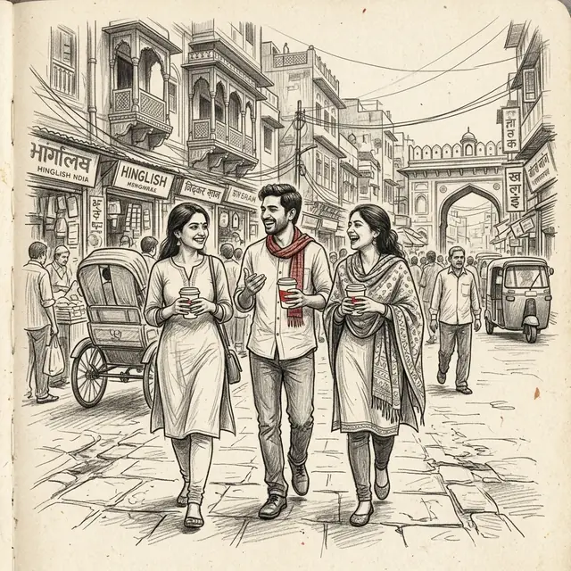

Not another feed
Social feeds are mostly built for posting and browsing. Humrah is built around a different question: who would like to do something together?
The story behind Humrah
Humrah is a social companionship app that helps you find compatible people nearby and turn shared interests into real plans: a coffee, a walk, a meal, a movie, a game.
It is built for friendship and company, not dating, for anyone who has ever had a free evening and no one to share it with.

Why Humrah exists
Most of us have hundreds of contacts and followers. What is harder to find is someone to actually do something with: someone who is free this evening, nearby and into the same things you are.
None of this is unusual. It is just that nothing made the first step easy. Humrah is an attempt to make that first step easier.


What is Humrah?
Humrah is a social companionship and real-world connection app from India. It helps adults find compatible people and shared activities nearby, start a conversation and plan time together in the real world. It is designed for friendship and company, not dating, and it is currently in early access on Android, focused on Delhi.
Social feeds are mostly built for posting and browsing. Humrah is built around a different question: who would like to do something together?
Humrah does not assume romance. People come for a coffee partner, a walking buddy, a movie companion or a conversation, and that is the whole point.
Knowing what is happening is half of it. The other half is having someone to go with, and Humrah puts the people and the plan in the same place.
How Humrah works
Sign up with email, Google or Facebook, confirm you are 18 or over, and answer a few questions about your interests, your vibe and how you like to spend time.
Record a short verification video in the app. It is reviewed before your profile shows as verified, and some features, such as Movie Hangout, are open only to verified members.
See people nearby who share your interests or your mood, and browse plans, events and Humrah Rooms around you.
Start a chat, join someone's plan or make your own: pick an activity, a public place and a time that works.
Meet in a public place. Safety tools are there if you need them, and you can rate the meetup afterwards.
In testing Quick Connect, a spontaneous one-to-one voice call with an eligible member who shares your interests, is being tested and will be introduced gradually, so it may not be available to everyone yet.
The moments Humrah is built around
These are some of the activity types you will see in Humrah, shown with the artwork from the app itself. None of them needs a big occasion, just the right company.
Good coffee, better talks.
Clear mind, new corners.

Try something delicious.
Local bites, big stories.

Fresh air, better vibes.
Museums, galleries and more.

Capture the moment.

Discover something new.
Good people, no plan.
Be productive together.
Features may be introduced or changed during early access, so what you see can vary.
What Humrah believes
The app is the start, not the destination. Success looks like an evening well spent, not hours spent in the app.
A common interest makes the first conversation easier than a perfect photo ever could.
You come to find someone to do something with, then you go and do it.
Some people want a group, some want one person, some want to chat for a week first. All of that is fine.
Companionship is valuable on its own terms. Nobody should have to explain that a coffee is just a coffee.
Verification, guidelines and safety tools are part of the product, not an afterthought.
I don't want Humrah to replace human connection. I want it to help people find it.
Safety, trust and responsibility
Meeting new people should feel considered, not risky. Humrah provides tools and rules intended to support safer interactions, and you stay in control of every decision.
An honest note. Some of these tools appear only within planned meetups. Verification is a review of a member's photo and video; it is not a background check and does not guarantee anyone's identity, intentions or behaviour. No app can make every meetup safe, so please trust your judgment, meet in public and leave if something feels off.
Read the Community Guidelines, the Privacy Policy, the Terms of Service and the Child Safety Standards.
From Andaman to Delhi. From an idea to Humrah.
Where the journey began.
Humrah's story starts on an island, far from the pace and the scale of a big city.
A different city. A different understanding of companionship.
New city, new routine, thousands of people, and still the same question on a free evening: who do you call? Being surrounded by people turned out to be very different from having company.

What if finding someone didn't have to be so hard?
Not another feed and not another dating app: something that helps people find a reason, and a person, to step out together.
No big team. Just an idea and a lot of code.
Humrah has been built independently, end to end: product design, the Android app, backend systems and APIs, databases, infrastructure, testing and deployment. Idea, design, code, break, fix, test, repeat.
Making it easier to find good company.
Learning from early access in Delhi, improving the product with every release and keeping the focus on what matters: people spending real time together.
The person building Humrah
Founder & Developer, Humrah
Dijendra came to Delhi from Andaman and started building Humrah around a simple idea. Today Dijendra designs and develops the product end to end, from the Android app to the systems behind it, and keeps refining it with feedback from people using it in early access.
“I came to Delhi from Andaman and started building Humrah around a simple idea: technology should help us find people, not just give us more people to scroll past.”
The technology behind the experience
The best technology here is the kind you barely notice: it gets you from “I'm free tonight” to “see you at six” and then gets out of the way.
Built in Kotlin for everyday Android phones.
Interests, mood and plans help surface people and activities worth your time.
Chats, rooms and voice that work in the moment, when plans are actually made.
Eligibility checks, verification and safety workflows are part of the core system, running on a Node.js and MongoDB backend.
Why Humrah is different
A broad comparison of what each kind of product is mainly built for. Many great platforms overlap; this is about focus, not judgement.
| Dimension | Humrah | Typical social feed | Dating-first app |
|---|---|---|---|
| Main purpose | Finding company for real-world moments | Sharing and browsing content | Romantic matching |
| Romantic expectations | None assumed | Not the focus | Usually the starting point |
| Shared activities | Built around them | Occasional | Sometimes |
| Human conversation | One-to-one chats, group chats and rooms | Comments and messages | One-to-one after a match |
| Where it leads | A plan, a place and a time | Mostly online interaction | Dates |
Where Humrah is today
Humrah is available on Google Play.
You can sign up from anywhere in India. Early access is focused on Delhi, so elsewhere you may find fewer people and plans nearby for now.
New features are tested and introduced gradually. Quick Connect voice calls, for example, are currently in testing.
Ideas and problems go straight to the person building it: support@humrah.in.
The long-term vision
This is the direction Humrah is working towards, not a list of released features.
Questions, answered
Short, straight answers about Humrah.
Humrah is a social companionship app that helps people find compatible people and shared activities, start a conversation and plan real-world time together, such as a coffee, a walk, a meal, a movie or a game. It is built for friendship and company, and it is available on Android.
No. Humrah is not a dating app. It is designed for companionship, friendship and shared experiences, and it does not assume romantic intent.
Humrah uses your interests, your mood and your plans to show you compatible people and activities nearby. You can chat first, join or create a plan, and meet in a public place when you are ready.
Humrah is for adults aged 18 or over who want company for everyday experiences, including people who have moved to a new city, people looking for others with similar interests and anyone who would rather not go alone.
People use Humrah to find company for activities such as coffee, walks, food, street food, nature, art and culture, photography, exploring a city, studying or simply hanging out. The app also includes Humrah Rooms for group conversations, Movie Hangout sessions and Sports & Fitness plans.
Humrah is for adults only, asks members to complete photo verification, has published Community Guidelines and lets people block and report others. During planned meetups, the app offers tools such as a trusted contact who can be alerted by WhatsApp or SMS, private safety notes and optional live-location sharing. No app can guarantee safety, so members should still use their own judgment.
You can sign up from anywhere in India. Early access is currently focused on Delhi, so outside Delhi you may find fewer people and plans nearby for now.
Download Humrah from Google Play, create your profile, confirm that you are 18 or over, add your interests and complete photo verification. Then you can discover people and plans nearby.
Humrah was founded by Dijendra Nath Mondal, Founder & Developer of Humrah. Dijendra started building it after moving from Andaman to Delhi and designs and develops the product end to end.
Social feeds are mostly built for sharing and browsing content. Humrah is built around doing something together: finding someone with similar interests and turning a conversation into a shared, real-world experience.
Real people. Real moments.